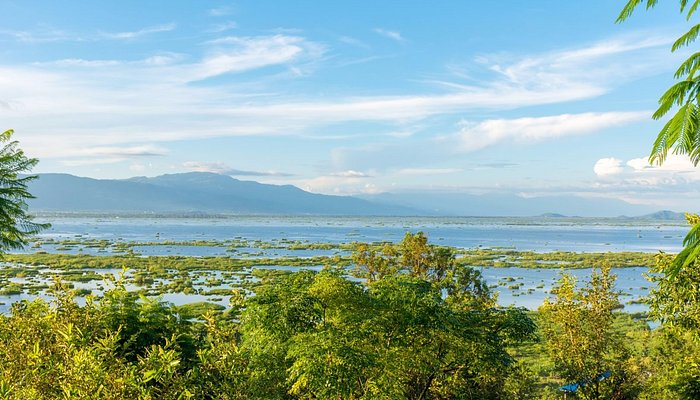

Famous Places
Dzukou Valley

The Dzuko Valley, also known as Dzükou Valley or Dziiko Valley, is a valley located in between Senapati district of Manipur and Kohima district of Nagaland in Northeast India.This valley is well known for its natural environment, seasonal flowers and flora & fauna.
Loktak Lake
Loktak Lake is a freshwater lake in Northeast India. It is a pulsating lake, with a surface area varying from 250 km2 to 500 km2 during the rainy season with a typical area of 287 km2. The lake is located at Moirang in Manipur state, India. The etymology of Loktak is Lok = "stream" and tak = "the end" in Meitei language (Manipuri language). It is famous for the phumdi (heterogeneous mass of vegetation, soil and organic matter at various stages of decomposition) floating over it.